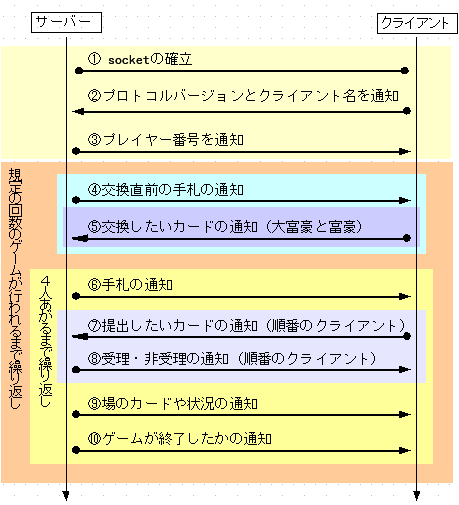

サーバとクライアントはsocket を使って通信します。それぞれのプレイヤーが持っているカードは二次元配列で表現されていて、この二次元配列をやり取りすることで、サーバがクライアントに持ち札を通知したり、クライアントが出したいカードをサーバに通知したりします。
通信する際には、基本的に整数値をやりとしします。 この整数値は、ネットワークバイトオーダーで表現されます。
この章では、2010年度版のサーバーとクライアントの間で通信をするための決め事について説明します。 プロトコルと言ってしまってもいいかどうかは、少々議論の余地が残っているのですがここでは説明の都合上、プロトコルと呼ぶことにしておきます。
また、2010年度版のサーバーとクライアントの通信プロトコルは、2007年度のものと同一になります。 つまり、UECda-2007用のクライアントは、UECda-2010でも、 そのまま利用できます。
この章では、2007年度プロトコルの説明をします。 2006年度版のプロトコルについては説明していません。 2006年度版のプロトコルについては 第1回UEC大貧民大会マニュアル を参照してください。
サーバとクライアントはsocket を使って通信します。それぞれのプレイヤーが持っているカードは二次元配列で表現されていて、この二次元配列をやり取りすることで、サーバがクライアントに持ち札を通知したり、クライアントが出したいカードをサーバに通知したりします。
通信する際には、基本的に整数値をやりとしします。 この整数値は、ネットワークバイトオーダーで表現されます。
クライアントがどのようなカードを持っているか、現在ゲームはどのような状態なのか、という情報は常に整数値の二次元配列で表現します。 二次元配列は8x15のサイズになっていて、それぞれのセル（マス目） には整数値が入ります。 なお、UECコンピュータ大貧民大会ではこの二次元配列をテーブルと呼ぶことにします。
プロトコル中では、3つのタイプの配列が使用されます。 それぞれのテーブル内のマス目の意味は次のようになります。
クライアントからサーバーに通信を行なうときに使用されます。 内容としては、
を通知します。テーブルは次のようになります。
| 0 | 1 | 2 | 3 | 4 | 5 | 6 | 7 | 8 | 9 | 10 | 11 | 12 | 13 | 14 | |
|---|---|---|---|---|---|---|---|---|---|---|---|---|---|---|---|
| 0 | プロトコルのバージョン | ||||||||||||||
| 1 | クライアントの名前 | ||||||||||||||
| 2 | |||||||||||||||
| 3 | |||||||||||||||
| 4 | |||||||||||||||
| 5 | |||||||||||||||
| 6 | |||||||||||||||
| 7 | |||||||||||||||
[0][0] には、プロトコルのバージョンが書かれます。 2006年度のプロトコルの場合は 20060を、 2007年度のプロトコルの場合は 20070を書きます。
[1][0]〜[1][13] には、各クライアントの名前が書かれます。 それぞれの配列に1文字づつ、アルファベットに対応した値を入れてください。 また、末尾に NULL を入れてください。 プロトコルでは、13文字まで大丈夫ですが、 現状のCサーバーは6文字までしか対応していません。
サーバーからクライアントに、場の状況や、各プレイヤーが持っているカードを通知するときに使用されます。
| 0 | 1 | 2 | 3 | 4 | 5 | 6 | 7 | 8 | 9 | 10 | 11 | 12 | 13 | 14 | |
|---|---|---|---|---|---|---|---|---|---|---|---|---|---|---|---|
| 0 | JOKER | スペード、左から 3,4,5,…,Q,K,A,2 | JOKER | ||||||||||||
| 1 | ハート | ||||||||||||||
| 2 | ダイヤ | ||||||||||||||
| 3 | クローバー | ||||||||||||||
| 4 | 未定義 | JOKER（5カードの表現のため） | 未定義 | ||||||||||||
| 5 | カード交換中か否か | カード交換の枚数 | 自分のターンか否か | 何番目のプレイヤーのターンか | 場が流れたか否か | イレブンバック発生中か（予約） | 革命発生中か | 縛りが発生しているか | |||||||
| 6 | プレイヤー0 の手札の枚数 | プレイヤー1 の手札の枚数 | プレイヤー2 の手札の枚数 | プレイヤー3 の手札の枚数 | プレイヤー4 の手札の枚数 | プレイヤー0 の階級 | プレイヤー1 の階級 | プレイヤー2 の階級 | プレイヤー3 の階級 | プレイヤー4 の階級 | 席1に座っているプレイヤーの番号 | 席2に座っているプレイヤーの番号 | 席3に座っているプレイヤーの番号 | 席4に座っているプレイヤーの番号 | 席5に座っているプレイヤーの番号 |
| 7 | |||||||||||||||
カードを有るか否かは、セルに1が立っているかどうかで判断します。 1が立っている場合は、カードが有ります。 例外的に JOKER は 2 を使って表現することがありますが、それは後で説明します。
基本的にYes or Noで答えられるような内容のセルは、1 が Yes で 0 が No です。
[5][1] のカード交換の枚数だけは、やや特殊なデータが送られてきます。 大富豪と富豪には 2もしくは1が、それ以外の身分に対しては 0 が送られてきます。
クライアントからサーバーにカードを提出するときに使用されます。
| 0 | 1 | 2 | 3 | 4 | 5 | 6 | 7 | 8 | 9 | 10 | 11 | 12 | 13 | 14 | |
|---|---|---|---|---|---|---|---|---|---|---|---|---|---|---|---|
| 0 | JOKER | スペード、左から 3,4,5,…,Q,K,A,2 | JOKER | ||||||||||||
| 1 | ハート | ||||||||||||||
| 2 | ダイヤ | ||||||||||||||
| 3 | クローバー | ||||||||||||||
| 4 | 未定義 | JOKER（5カードの表現のため） | 未定義 | ||||||||||||
| 5 | |||||||||||||||
| 6 | |||||||||||||||
| 7 | |||||||||||||||
カードを持っているか否かは、セルに1が立っているかどうかで判断します。1が立っている場合は、カードを持っています。 例外的に JOKER は 2 を使って表現することがありますが、それは後で説明します。
基本的にYes or Noで答えられるような内容のセルは、1 が Yes で 0 が No です。
ここでは通信がどのタイミングで発生するかと、通信されるデータの概要について説明します。
通信手順の模式図が図13.4 です。

図13.4 ： 通信手順の概略図
（画像をクリックで大きい図）
それぞれの通信の詳細については次の表のようになります。 表中のデータ形式に書かれている『テーブル1』〜『テーブル3』は、 13.2節で説明ししているものです。
| 図中の添字 | 通信の目的 | データ形式 |
| 1 | ソケットの確立 | |
| 2 | プロトコルバージョンとクライアント名の通知 | テーブル 1 |
| 3 | プレイヤー番号の通知 | 整数値 |
| 4 | ゲーム開始時の手札通知 | テーブル 2 |
| 5 | 交換したいカードの通知（富豪、大富豪時のみ） | テーブル 3 |
| 6 | クライアントが持っている手札を通知 | テーブル 2 |
| 7 | 出したいカードの通知 | テーブル 3 |
| 8 | 通信7 で通知したカードがルール上受理できたかを通知 | 整数値 |
| 9 | 場のカードや各プレイヤーの状況などを通知 | テーブル 2 |
| 10 | ゲームが終了したかを通知 | 整数値 |
図13.2 中では表現されていませんが、複数回繰り返される通信が存在します。通信が発生する順序を箇条書きで表現すると次のようになります。
プログラミングができる人は次のコードを見るとわかりやすいかもしれません。正確なコードではありませんが、C言語風に書くと次のような具合になります。なお通信につかうテーブルは table という二次元配列の変数風に書いてあります。
通信1;
通信2;
通信3;
while(すべてのゲームが終了していない){
通信4;
if(通信4で貰った tableの[5][1]>0){
通信5;
}
while(通信10 の結果の値が1 でない){
通信6;
if(自分がカードを出す順番である){
通信7;
通信8;
}
通信9;
通信10;
}
}
説明がわかりにくい場合は は
 までメールにてお問い合わせ下さい。
までメールにてお問い合わせ下さい。
ソケットを確立し、通信ができる状態にします。
クライアントからサーバー側に、テーブル1を送ります。
テーブル1 には、 クライアントが何年度版のプロトコルで通信を行なうかと、 各クライアント名の、 2つの情報が含まれています。
この通信は、socket の確立から、3秒以内に行なう必要があります。 行なわなかった場合、サーバーとそのクライアント間の通信プロトコルとして 2006年度版が使用されます。
テーブル1の詳細は、13.2節を参照してください。
サーバからクライアントに対してプレイヤー番号が通知されます。プレイヤー番号はサーバに接続を要求した順番に割り当てられ、値の範囲は0 から4 です。
サーバからテーブルが渡される際、各プレイヤーの残り枚数や、階級はこのプレイヤー番号ごとに通知されます。たとえば、自分が何番のプレイヤーなのかが分からなくなってしまうと、サーバから送られてくるテーブルに含まれる情報の一部が無意味になってしまいます！。
プレイヤー番号を正常に受け取ることができたら、サーバはクライアントに対して手札を通知してきます。 すなわち、サーバからクライアントに対してテーブル 2 の形式の配列が渡されます。
貧民と大貧民には、カード交換を行なう前の情報が渡されます。 一方、 富豪と大富豪には、貧民と大貧民から強いカードを奪ったあとの情報がわたされます。 貧民と大貧民は、後々わたされる持ちカードの情報と比較することにより、何を奪い取られ、何を押し付けられたかを知ることができます。 一方、富豪と大富豪は、何のカードを奪い取ったかの情報を知る手段はありません。
このとき、テーブルの[5][1] 要素は重要なデータを含んでいます。自分が富豪か大富豪の場合は、ここに正の整数がセットされていて、それぞれ貧民、大貧民に渡すカードの枚数を意味しています。
通信4 でふれましたが、自分の階級が大富豪か富豪の時は大貧民、貧民に渡すカードを選択することができます。この通信では、自分が要らないと考えるカードをテーブル形式に置き換えた上でサーバに通知する必要があります。
なお、平民以下の階級の場合はテーブルを送り返す必要はありません。
通信6 でも通信9 でも似たようなテーブルを受け取りますが、通信6 によるテーブルとと通信7 によるテーブルを区別する方法は[5][2] のセルの値です。 これが1 であれば自分の順番が来ているということを意味するので、このテーブルは通信4 によるものであると判別できます。
このテーブルでは自分の手札に加えて、場が流れているかどうか、革命が発生 しているかどうか、という情報が含まれています。
このテーブルを元に、自分がどのカードを出すかを決めるアルゴリズムを考えるのがクライアント・プログラム改良の作業のうち大部分を占めます。
この通信はクライアントにカードを出す順番が回ってきたときにしか発生しません。
通信4 で得られた手札のテーブルを元に、自分が出したいカードのテーブルを作成します。具体的には、自分が出したいカードを意味するセルを1 に、それ以外のセルを0 にしたテーブルを生成して、サーバに送信する作業です。ジョーカーを出す場合はセルに2 を立てて出す必要があるのですが、それについては後述します。
また、パスをしたい場合はすべて0 で埋めたテーブル送信するひつようがありますが、これについても後述します。
この通信はクライアントにカードを出す順番が回ってきたときにしか発生しません。
サーバは5 で受け取ったテーブルが意味するカードが、ルール上本当に出せるものであるかどうかを検証し、その結果をクライアントに通知します。
諸般の事情で、出せた場合は整数値の 9 が、だめだった場合は整数値の 8 が返されます。現状のルールでは、8 が帰ってきた場合、サーバはクライアントがパスをしたものとして処理しています。 したがって、クライアントがカードを再提出するチャンスが与えられるわけではないことに注意してください。
主に、クライアント側で自分の手札を独立して管理している場合に整合性をとるために使用します。
順番が回ってきたクライアントがカードを出したか、パスをしたかにかかわらず現在場に出ているカードを意味するセルに 1 が、それ以外のカードを意味するセルに 0 が保持されたテーブルです。
また、ゲームの状態を意味するセル（5 行目以降） は、現在のゲーム状態を反映するような値を持っていることが多いですが、保障されていません。ゲームの状態を知りたい場合は、かならず通信 4 で得られたテーブルを見るようにしてください。
この通信は整数値がわたされます。もし値が1 であれば、5 クライアント中 4 クライアントが上がり、一回のゲームが終了したことを意味します。 もし値が 2 であれば、すべてのゲームが終了したことを意味します。
これはクライアントの実装上、ループを抜けるフラグが必要なため設けられた通信です。
これまでに書ききれなかった重要な事項について説明します。
カードを意味するセルに2 を立てるとジョーカーを意味します。 ジョーカーはオールマイティカードとして使うことができるので、このような仕様になっています。ジョーカーが関係しうるケースについて、詳しく説明していきます。
幸運にも、自分がジョーカーを持っている場合、サーバから通知されるテーブル上ではどのように表現されるのでしょうか？。
答えは[4][1] に2がセットされているです。出すカードを決定するアルゴリズム上で、この[4][1] に2 が収められているケースの処理を忘れてしまうと、せっかく手に入れたジョーカーは永遠にあなたの手札のままです！。当然あがることもできません。十分に気をつけてください！。
ジョーカーを単体で出す際、サーバに送るテーブルの表現はどのようにすればいいのでしょうか？。
答えは[0][0] から[3][14] の範囲の任意のセルに 2 をセットし、それ以外は0 で埋め尽くすことです。
この範囲内であれば、サーバーは自動的にジョーカーを単独で出したいのだな、と理解してくれます。
ジョーカーはオールマイティカードなので、階段の中に含めてだしたり、複数枚同時出しに参加させることができます。
当然この場合は、ジョーカーがどのカードの役割を果たすべきかはっきりとしていますよね？
サーバに出したいカードを通知するテーブルを作るときは、ジョーカーに果たさせたい役割のカードを意味するセルに 2 を立てれば OK です。
たとえば、スペードの 9、10 とジョーカーを持っていて、スペードの 9、10、11 の階段として提出したいときは、[0][7] と[0][8] に1 を、[0][9] に2 を立ててそれ以外を 0 とします。
また、スペードとハートとダイアの5 をそれぞれと、ジョーカーを持っていて、5 の 4 枚組みとして革命を起こしたいときは[0][3]、[1][3]、[2][3] にそれぞれ1 を、[3][3] に2 を立てて、それ以外を0 とすればOKです。
わかりにくければ、
 までメールでお問い合わせください。
までメールでお問い合わせください。
パスをしたい場合は、すべてのセルを0 で埋めたテーブルをサーバに送信してください。サーバから受け取ったテーブルをそのまま送り返しても、ほとんどの場合はパスになる（ルール上出せないカードであることが多いので） はずですが、推奨しません。
なるべくなら、きっちりとすべてのセルを0 で埋めるようにしてください。
プロトコルの知識は、ほとんど必要ありません。なぜなら、通信関係の処理はすべて標準クライアントで実装されているからです。オリジナルのクライアントを作成しようと考えている人は、標準クライアントの指定された部分を書き換えるだけでOKです。
詳細は標準クライアントをみて頂きたいと思いますが、書き換えるべき部分が明示されています。
[UECda] → [UECda-2010] → [マニュアル目次] → [通信のプロトコル]
{kind=link}